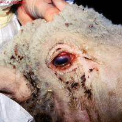
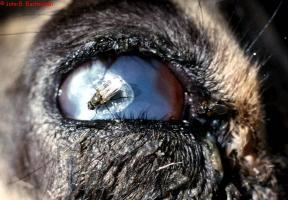
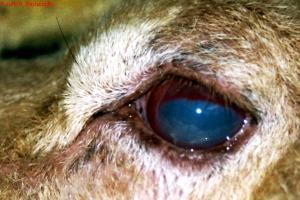
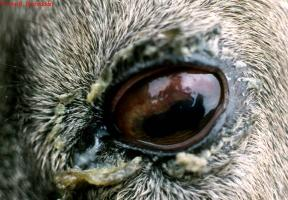
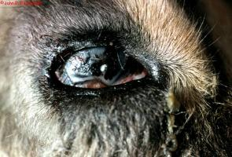
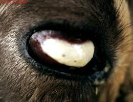
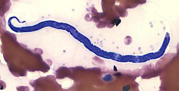

Eye problems (new)
{kind=link}
Eye problems can affect all animal species.
- Eye injuries are especially a problem in camels, as their eyes protrude and they gaze on thorny bushes.
- The three most important conditions affecting the eyes of livestock in Kenya are Pink Eye, Thelazia Eye Worms and Squamous Cell Carcinoma of the eye.
Introduction
Different types of eye problems may have different causes such as:
- Insect bites in the eye
- Ticks attached around the eyelid
- Eye worms
- Foreign bodies in the eye
- Injury to the eye, for instance by thorns aor herders' sticks
- Infectious diseases such as pink eye or camel pox
- Irritating sap from plants such as Euphorbia candelabrum (Luo: bondo, ojouk / Kikuyu, Meru: mathori / Kamba: ndau / Maasai: olpopongi)
- Snake venom
- Sun induced cancer
- Cataract
The most common signs are:
- Watery or yellowish discharge from the eye
- Partially or totally closed eye
- Swollen eye
- Reddish eye
- Thick, whitishfilm covering the eye
- Abnormal growths in the eye
Prevent eye problems by doing following:
- Apply tick grease or other repellants around the eyes.
- Manually remove ticks.
- When spraying make sure NOT to spray directly into the eye.
- Do not hit the animal especially not around the eyes
- Do not herd where there are many thorny plants or plants with irritating sap
- Use only leafy trees and shrubs for fencing in the animal pen
- Separate animals with infectious eye diseases from the rest of the herd
- Control Camel pox
Pink Eye
Pink Eye or Infectious Kerato conjunctivitis is an infection of the eyes of cattle, sheep, and goats with a mixture of micro-organisms which include Moraxella Bovis, Mycoplasma species, Listeria monocytogenes and Chlamydia.
The infection occurs in animals of all ages but is more severe in young animals. The disease is generally less severe in sheep and goats. One or both eyes may be affected. Zebu cattle appear to be less likely to be affected than European breeds of cattle.
|  |
| Keratoconjunctivitis in a Sheep caused by MmmLC |
| (c) R.A.J. Nicholas. Reproduced from the Animal Health and Production Compendium, 2007 Edition. CAB International, Wallingford, UK.
|
Mode of Spread
- Moraxella bovis is the organism primarily responsible for the severest form of the disease in cattle.
- When cattle are eating silage, Listeria may cause conjunctivitis, but less severe in than when caused by Moraxella.
- In sheep Clamydia is the most common cause. The disease is generally less severe in sheep and goats.
- Infection does not spread between small ruminants (like sheep and goats) and cattle since the causative agents of the disease for small ruminants differ from those which affect cattle.
- Spread by direct contact with infected animals, especially when animals are crowded together.
- In cattle, dry dusty conditions, shipping stress, irritants such as grasses and pollens, grasses contaminated by eye discharges, bright sunlight, lack of pigment in the eyelids and flies may increase disease occurrence.
- Flies also spread the disease in cattle.
|  |
| Pink Eye is spread by flies |
| (c) John B. Bashiruddin. Reproduced from the Animal Health and Production Compendium, 2007 Edition. CAB International, Wallingford, UK.
|
Signs of Pink Eye
- The incubation period is usually 2-3 days but can be up to 3 weeks after infection.
- One or both eyes may be affected.
- The eye becomes watery, the lining under the eyelid becomes red and inflamed and the animal blinks repeatedly and diverts the affected eye(s) away from bright sunlight.
- A small unclear area appears in the centre of the eye. Within a few hours a faint haye appears which becomes denser. After 48-72 hours the whole cornea may be unclear, blinding the animal in that eye. If the eye is hazy white to blue this is due to accumulation of fluid. If it is milky white or yellow this is due to white blood cell infiltration and indicates severe infection.
|  | ||
| Pink eye signs - a small unclear area in centre of the eye | Pink Eye signs | |
| (c) John B. Bashiruddin. Reproduced from the Animal Health and Production Compendium, 2007 Edition. CAB International, Wallingford.
| (c) John B. Bashiruddin. Reproduced from the Animal Health and Production Compendium, 2007 Edition. CAB International, Wallingford. |
|  |
| Thickened corenea after healing of Pink Eye. |
| (c) John B. Bashiruddin. Reproduced from the Animal Health and Production Compendium, 2007 Edition. CAB International, Wallingford.
|
|  | |
| Severe Pink Eye | |
| (c) John B. Bashiruddin. Reproduced from the Animal Health and Production Compendium, 2007 Edition. CAB International, Wallingford.
|
|  |
| Ruptured cornea after pink eye |
| (c) John B. Bashiruddin. Reproduced from the Animal Health and Production Compendium, 2007 Edition. CAB International, Wallingford.
|
- Blood vessels invade from the edge of the cornea.
- A small ulcer is apparent near the centre of the cornea.
- Continued active ulceration may cause the cornea to rupture.
- Appetite is often suppressed due to pain and visual impairment, milk yield is likely to drop and there may be loss of weight.
- Most animals slowly recover over a period of about a month, sometimes a small white scar remains. About 2% are left blind in the affected eye. In severe cases the eye becomes conical in shape, with ulceration at the tip. These eyes are liable to rupture.
Other conditions can cause inflammation of the eye, so in every case, a close inspection of the affected eye is essential.
- Foreign bodies, such as grass seeds and awns can become stuck to the surface of the eye.
- Thorns can be embedded in the cornea.
- Spitting cobras can project venom into the eye.
- Corrosive fluids and saps can inflame the cornea.
- Worms can live in the conjunctival sac.
Prevention and Control of Pink Eye
- Avoid overcrowding of animals.
- Sick animals should be isolated and treated.
- Affected animals should have access to shade.
- Cleanliness in the cattle yards should be maintained in an effort to keep fly numbers to a minimum.
- Insecticides in the form of pour-ons may be beneficial.
- Recovered animals have an immunity lasting for about 12 months.
Recommended Treatment
- Oxytetracycline is the drug of choice for systemic treatment as it is concentrated in corneal tissue. Two injections (20mg/kgIM) of a long-acting oxytetracyline forumlation (-200mg/ml) at 72 hour intervals is the treatment of choice (as per the manufacturer's instructions).
- Ampicillin, penicillin, gentamycin and kanamycin can be injected into the eye, sometimes in conjunction with a corticosteroid such as dexamethasone, but this should be done by a skilled veterinarian.
- Eye ointment require frequent application to be effective, as often as three times daily. Oxytetracycline/polymixin B, gentamycin and erythromycin are effective. The ointment must be instilled carefully under both upper and lower eyelids.
- In severe cases the use of 1% atropine drops or ointment will prevent body spasms within the eye and reduce the likelihood of stickiness forming within the eye.
- If an ulcer ruptures the eye will collapse and shrink. In some cases there is continuing discomfort, pain and discharge due to ongoing infection. In many cases removal of the eye by a vet is the best option. This involves removal of the eye, leaving the eye muscles and remaining orbital contents intact.
Eye Worms
These worms live in the conjunctival sac (eyelid) of the eye in many species of livestock, in many countries. Cattle, sheep, horses, camels, goats, pigs, dogs, cats, birds, and humans can be affected. The most common species in Kenya is Thelazia rhodesii, which parasitizes cattle and sheep. The worms are up to 2cm long and are thin and white. One or both eyes may be affected.
|  |
| Eye Worm |
| (c) Courtesy of the United States Federal Government
|
Mode of Spread
Various species of fly, in which the worm has part of its life cycle, are responsible for the spread of the worm from one animal to another. The fly has a preference for eye secretions which are ideal for transmission. The fly ingests the larvae which become infective in 2-4 weeks. These larvae are mechanically deposited in teh host's eye by the fly during feeding. Development of sexually mature worms takes about 1-4 weeks in cattle.
The worm lives under the eyelids, in the conjunctival sac and under the third eyelid. The worm has a rough cuticle (skin) which causes irritation and inflammation to the cornea.
Signs of Eye Worm
- Excessive production of tears which may contain pus.
- Avoiding sunlight.
- Inflammation of the thin membrane covering the white of teh eye and the inner surface of the eyelid (Conjunctivitis).
- Cloudiness of the cornea and sometimes ulceration and piercing of the cornea.
- Lack of response to treatment with antibiotics.
Diagnosis
Prevention of Eye Worms Infestation
Recommended Treatment and Control
- A qualified veterinarian can remove the worms with forceps after instillation of a local anaesthetic solution or
- Using an eye wash containing a local anaesthetic and wash the worms out of the eye. A mixture of 10 ml of 2% local anaesthetic solution with 40-50ml of clean water makes the eye wash. 5-10 ml is put onto the eye and after waiting for about 2 minutes, the worms are washed out of the eye using clean cold water.
- Certain systemic dewormers such as Levamisole at 5 mg/kg under the skin and Ivermectin and Doramectin both at 0.2 mg/kg SC or in the muscle are effective treatments.
- Pour-on forumlations of Ivermectin and Doramectin, delivered on the back of the animal to achieve a dosage of 0.5 mg/kg are also highly effective.
- Treatment is also possible with topical application of Levamisole or topical Ivermectin. Bother are given as a 1% aqueous solution directly into the eye. If the eye discharge is cloudy or white it may be advisable to put an antibiotic ointment into the eye following removal of the worm or following the administration of dewormers.
Squamous Cell Carcinoma
Ocular Squamous Cell Carcinoma (Cancer Eye) is the most common tumour of cattle. It is common in various European breeds in Kenya, especially Friesian/Holsteins, and Ayrshires.
- Zebu cattle are rarely affected.
- When it occurs it results in significant economic loss due to condemnation at slaughter and a shortened productive life.
Cause
Signs
- The lesionsbegin as non-cancerous, smooth, white growths on the eyeball surfaces. These may progress to a papilloma (a small solid benign tumour with a clear-cut border that projects above the surrounding tissue) and then to the cancerous squamous cell carcinoma. Sometimes it goes directly to the cancer stage.
- The eyelids, eyeball surface (third eyelid) and the point where the cornea meets the 'white' of the eye all may be affected and the lesions may be ulcerative.
- Both eyes may be affected at the same time. At this early stage an unexpected improvement or cure may occur in a large number of animals. But the tumour may progress and become quite large and cauliflower-like.
- There is a discharge from the eye which may trickle down the face. The tumour may be large without invading the globe but later invasion into the globe and orbit and spread to local lymph nodes may occur.
- The whole eye may be destroyed accompanied by massive local swelling. At this stage no treatment is possible.
Treatment and Control
- Early treatment is usually successful, either bythe surgical removal of the tumour itself, or, if this is not possible, by surgical removal of the eye.
- Well equipped veterinarians may have other treatment options such as cryotherapy (a technique that uses an extremely cold liquid or instrument to freeye and destroy abnormal cells), hyperthermia (including extreme body temperature), radiation therapy and immunotherapy.
- But the most important factor in control is early treatment, preceeded by constant, close observation, breeding of animals with pigmented faces is important as animals with non-pigmented skins and non-pigmented eyelids are not suited to African conditions. Avoid them.
Eye Symptoms as Signs of Other Diseases
- Cloudy, whitish, milky blue eyes and shedding of tears: See East Coast Fever
- Shedding of tears: See Rhinotracheitis
- Excessive tears: See Mucosal Disease and Heartwater
- Watery discharge and cloudy eyes: See Trypanasomiasis
- Excessive tears which pay contain pus: Inflammation of the thin membrane covering the white of the eye and the inner surface of the eyelid; Cloudiness of the cornea and sometimes ulceration and piercing of the cornea:
Review Process
1. William Ayako, KARI Naivasha. Aug-Dec 2009
2. Hugh Cran, Practicing Veterinarian Nakuru. March-Oct 2010
3. Review workshop team. Nov 2-5, 2010
- For Infonet: Anne, Dr Hugh Cran, private veterinary practitioner
- For KARI: Dr Mario Younan KARI/KASAL, William Ayako - Animal scientist, KARI Naivasha
- For Department of Veterinary Services: Dr Josphat Muema - District Veterinary Officer Isiolo, Dr Charity Nguyo - Kabete Extension Division, Mr Patrick Muthui - Senior Livestock Health Assistant Isiolo, Ms Emmah Njeri Njoroge - Senior Livestock Health Assistant Machakos
- Pastoralists: Dr Ezra Saitoti Kotonto - Private practitioner, Abdi Gollo H.O.D. Segera Ranch
- Farmers: Benson Chege Kuria and Francis Maina Gilgil and John Mutisya Machakos
- Language and format: Carol Gachiengo, Journalist and editor.
4. Review by Dr Mario Younan, Regional Technical Advisor VSF-Germany (2013)
Information Source Links
- Blood, D.C., Radostits, O.M. and Henderson, J.A. (1983) Veterinary Medicine - A textbook of the Diseases of Cattle, Sheep, Goats and Horses. Sixth Edition - Bailliere Tindall London. ISBN: 0702012866
- Blowey, R.W. (1986). A Veterinary book for dairy farmers: Farming press limited Wharfedale road, Ipswich, Suffolk IPI 4LG
- CABI International 2007. Animal Health and Production Compendium. Wallingford UK: CABI International.
- Hall, H.T.B. (1985). Diseases and parasites of Livestock in the tropics. Second Edition. Longman Group UK. ISBN 0582775140
- Hunter, A. (1996). Animal health: General principles. Volume 1 (Tropical Agriculturalist) - Macmillan Education Press. ISBN: 0333612027
- Hunter, A. (1996). Animal health: Specific Diseases. Volume 2 (Tropical Agriculturalist) - Macmillan Education Press. ISBN:0-333-57360-9
- Merck Veterinary Manual 9th Edition